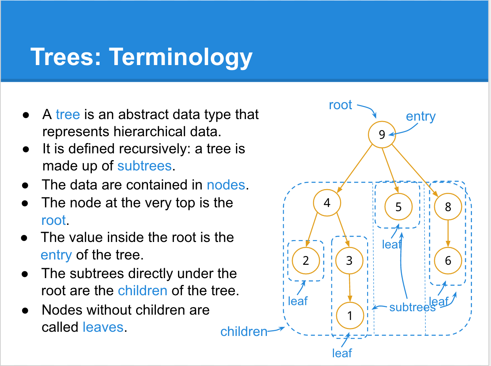
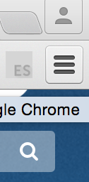
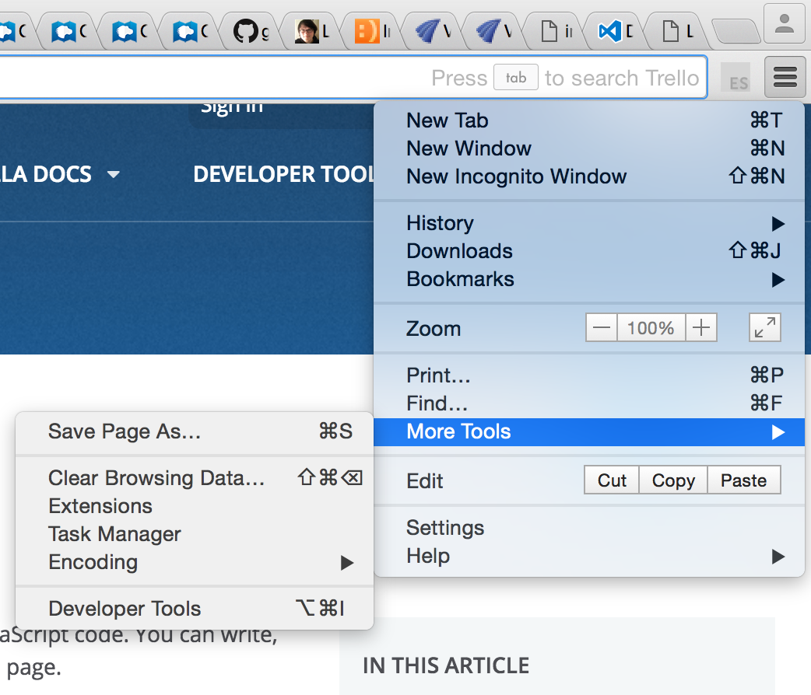
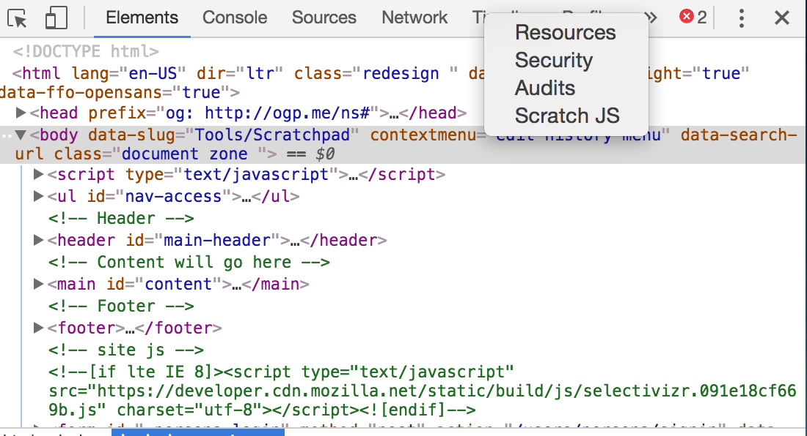
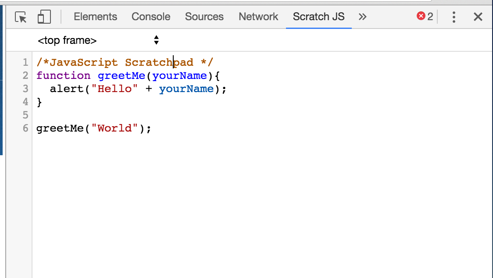

Today we get to explore the wonderful world of JavaScript. By now your website is looking pretty snazzy. You've got the layout. You've got the style. But perhaps you feel there's something missing....like animation, or a search box, or an interactive form/survey, or give users feedback when they interact with your website in a particular way (like this ). That's where JavaScript comes in.
What exactly is JavaScript? Here's what the creators of the language have to say about it: "JavaScript ("JS" for short) is a full-fledged dynamic programming language that, when applied to an HTML document, can provide dynamic interactivity on websites. It was invented by Brendan Eich, co-founder of the Mozilla project, the Mozilla Foundation, and the Mozilla Corporation. You can do pretty much anything with JavaScript. You'll start small with simple features such as carousels, image galleries, fluctuating layouts, and responses to button clicks. Eventually as you get more experienced with the language, you'll be able to create games, animated 2D and 3D graphics, full blown database-driven apps, and more!"
You can read the Mozilla Foundation's full description of JS here but we'll be going through most of the material together in class. Like we said before, JavaScript can do just about anything , including:- Make websites respond to users
- Build apps and games
- Access info on the internet (like Twitter feeds)
- Create a sign-up form
- Search box with autocompletion features (brings up suggestions based on what you've typed so far -- typing "de" for instance would signal "desert," "delaware," "dentist")
- Info that changes when you reload the page, like dates, times, sports match results, weather, stock market prices, etc.
- Drop down menu bar
- Organization and modification to the DOM (more on this this later)
- Animate elements on a page (ex: show/hide info, highlight sections, etc.)
- Learn what an API is
- Understand how JavaScript works with CSS and HTML
- Incorporate new script in website
- Learn basic data types
Before we can get into 'the DOM' & javaScript API's, we're going to learn some terminology that is relevant to all Object Oriented languages, including (but not limited to) Java & Ruby on Rails. So if you get this stuff down, you're well on your way to doing back end development as well
Last week we learned about 'methods' and how to call them. This week we'll learn about where these functions come from, and what to call them on:
- Object
- Class
- Interface
- Inheritance
- Data Type
- Operators
- < (less than)
- > (greater than)
- <= (less than or equal to)
- >= (greater than or equal to)
- = (assignment operator, e.g.: a = 5)
- === (equal to, e.g: a === b)
- !== (not equal to, e.g.: a !== b)
- Last but not least, read about String operations here
Think of the 'Document Object Model' as a standard that allows programs to dynamically access and manipulate the content, style, and structure of elements on your web page. The DOM is made up of:
- A set of objects
- A structure of how these objects can be used/combined
- An interface to access and modify them
Last step before we get more into the gory details of how the DOM works: let's define an REALLY important
data structure that will help us understand the DOM.
Introducing "THE TREE"
- Tree - a way to represent data in a hierarchial (upside down)'tree-like' structure (we'll see examples of this that'll make it clearer).
- Root the top node of a tree, from which all other 'child nodes' and subtrees branch. It has no 'parents.'
- Node - an element or entry on a tree
- Parent Node a node that is one level 'higher' (towards the top) than a child node, connecting
- Child Node - an entry branching from a parent, one level 'deeper' in the tree -- think of the tree as growing downward such that the children are closer to the bottom of the structure
- Leaf - nodes without children
- Branch - the edges connecting nodes together
Now we're ready to answer what's on our minds, 'What exactly is the DOM?' ... it's a tree!
We're going to learn about the DOM together on the board, but for your reference later (and as a strong recommendation), read this EXCELLENT article all about the DOM. It's clear, informative, and will catch you up to speed with everything you'll need to know to get started.
Let's follow this article and this article in our Scratchpad to access different elements of the DOM via javaScript
- Another introduction
- World Wide Web Consortium (W3C)'s explanation (these are the guys who MADE the DOM)
- Mozilla Developer Network's meaty explanation of the DOM
- Mozilla's list of Web API's accessed via the DOM
Now we're going to turn your webpage into a graphical 'tree' model using the DOM. For this exercise we're going to use some good ole fashion pen and paper (gasp). We'll do an exmaple together on the board to get you started.
Here's a lecture slide from CS61A: 'The Structure & Interpretation of Computer Programs' of the tree for your reference:

If you're still a little fuzzy with all this DOM stuff, watch this great Kahn Academy Tutorial on 'DOM Access Methods' and try to follow along in your terminal. The whole thing will take 30-45 minutes, but is definitely worth the time to really get you comfortable with javaScript.
Let's learn how to change elements on your page using the DOM with this article
For this program, we're going to learn a real nifty tool that comes with most web browsers: Scratchpad. So that we're on the same page, I'm going to be talking about Scratchpad in Chrome, which you can download for free as an extension. Scratchpad is a JavaScript tool that allows you to write and run code that interacts with your window.
- Once you've downloaded Scratchpad, open up Chrome and navigate to your favorite site.
- On the top-right hand corner of the browser, click the symbol with the three horizontal lines: 
- Click 'More Tools' >> 'Developer Tools' like so: 
- Click the double right-arrow symbol: '>>' and select "Scratch JS". Your screen should look something like this: 
- Now let's write your first program! We'll disect each part of the code below, but for now just copy and paste it into your browser: 
- Click "Run" at the bottom right hand of the Scratchpad.
So we know that javaScript can do basic math and represent data as Strings. Now let's learn about boolean logic
Introducing the 'if/else' statement
Now let's write an if/else program in Scratchpad:
< if ("myName".length >= 5){ console.log("You have a long name!");}
NOTE: Now we're writing to the console, which is a window that logs info about the current web page, including errors in your code, warnings, network information, etc. Click "Run" on Scratchpad, then move over to the "Console" tab to see if your message was printed
To really understand what's going on with JS, we're going to run through Mozilla Foundation's Getting Started with the Web: JavaScript Basics Tutorial. It has everything you need to know to learn the ABC's of javaScript and other programming languages like Java and Python, which it heavily borrows from. Let's go!
- Work on Website Peer feedback: how to give constructive criticism, analysis “Experience psychology” (not just designing for appearance, but also functionality) - navigate through each other’s sites, thinking about the positionality and appearance of everything (tool bar, scroll, images, etc.)
- The goal is to receive feedback so that people can 1. See where their teammates are at (and get inspired)
- 2. Identify which areas of their site to focus on in the remaining weeks 3. Have a space for analytic dialogue -- this isn’t just a ‘technical’ course devoid of conversation and peer-to-peer interaction;
- Read up on cool examples of using the DOM. Come next week with questions and readiness to continue using the DOM!
- Improve website, incorporating feedback that you got from your peers.
- (optional) Check out this free archive of JavaScript scripts that you can use in your website